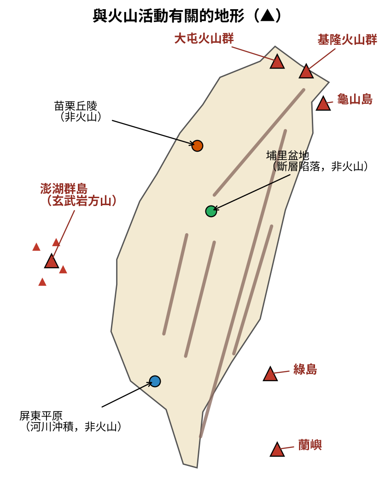
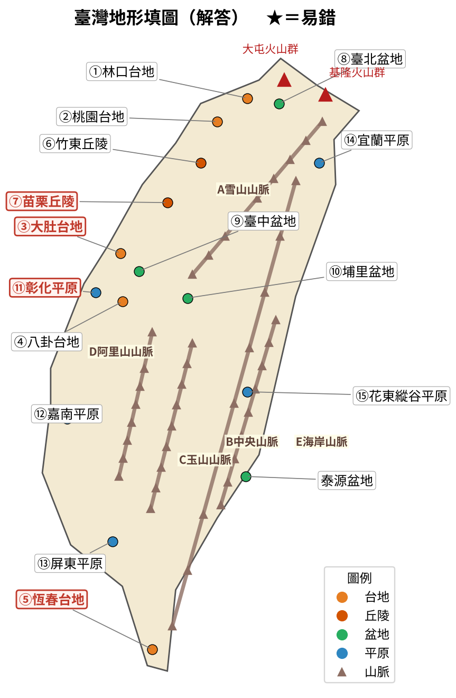
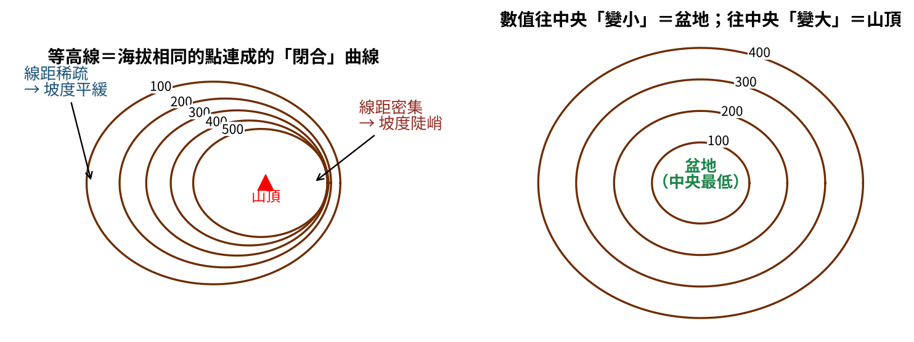
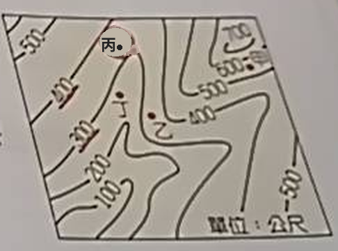
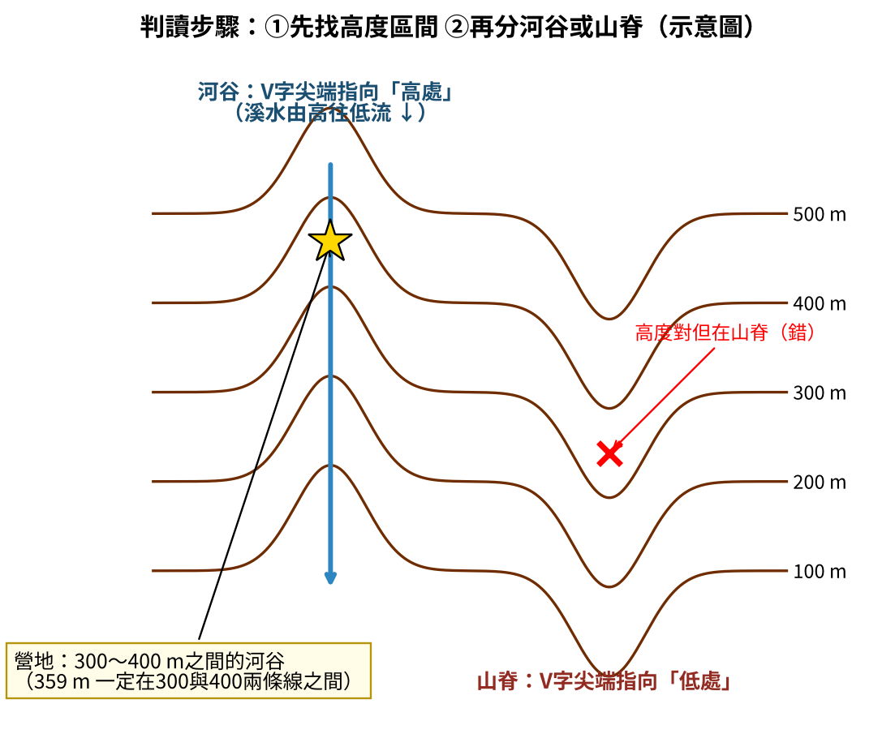
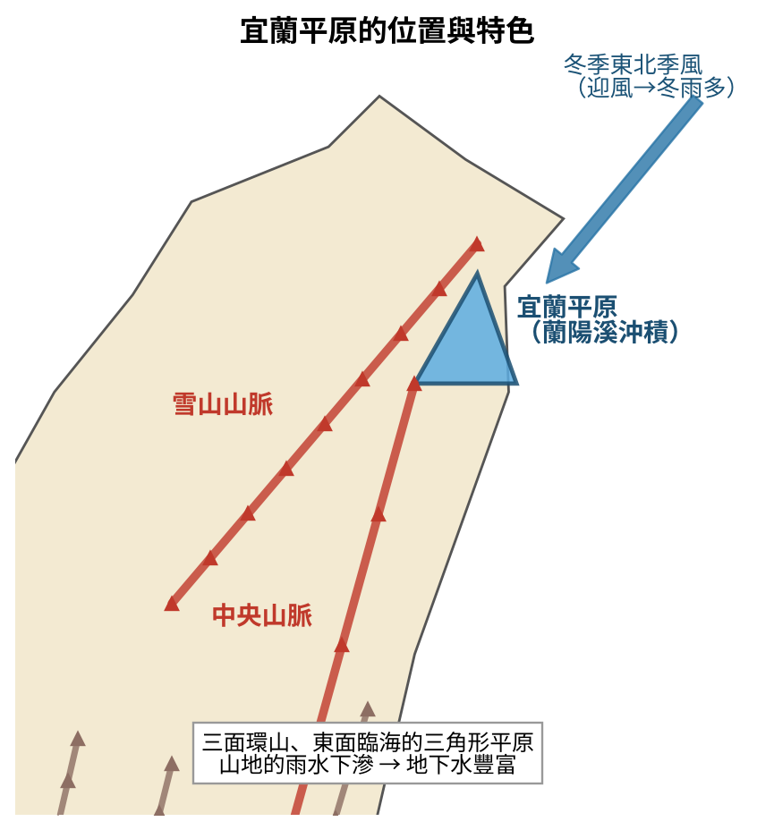
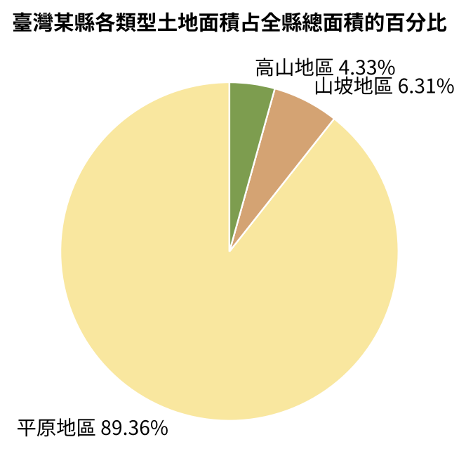

01
3-3 學習即時通・第1題
火山地形
臺灣因特殊的地理位置，火山活動頻仍。下列哪一地形區的形成與火山活動有關？
正確答案：A
澎湖群島是火山熔岩噴發後冷卻形成的「玄武岩方山」地形，與火山活動有關。
解題關鍵：(B)屏東平原是高屏溪等河川沖積形成；(C)苗栗丘陵、(D)埔里盆地也都不是火山作用形成。臺灣與火山有關：大屯火山群、基隆火山群、龜山島、澎湖群島、綠島、蘭嶼。

第3章 地形，共 5 題。章節開頭附臺灣地形填圖與比較表；每題選擇答案後，立即顯示正確答案、詳解與圖解；作答完可下載錯題詳解 DOCX（含圖）。
填圖練習 p.28
關鍵字：山地、丘陵、台地、盆地、平原、五大山脈、火山地形

| 類型 | 填圖編號與名稱 | 易錯提醒 |
|---|---|---|
| 台地 | ①林口 ②桃園 ③大肚★ ④八卦 ⑤恆春★ | ⑤在最南端屏東，叫「恆春台地」，不是墾丁台地 |
| 丘陵 | ⑥竹東 ⑦苗栗★ | 丘陵集中在竹苗地區 |
| 盆地 | ⑧臺北 ⑨臺中 ⑩埔里（＋泰源） | 埔里在臺灣地理中心附近 |
| 平原 | ⑪彰化★ ⑫嘉南 ⑬屏東 ⑭宜蘭 ⑮花東縱谷 | 嘉南平原面積最大 |
| 山脈 | Ⓐ雪山 Ⓑ中央 Ⓒ玉山 Ⓓ阿里山 Ⓔ海岸 | 中央山脈最長；玉山山脈有最高峰 |
| 火山 | 大屯火山群、基隆火山群、龜山島、澎湖群島、綠島、蘭嶼 | 澎湖是玄武岩方山 |
| 地形 | 外觀特徵 | 臺灣例子 |
|---|---|---|
| 山地 | 海拔高、起伏大、坡度陡 | 五大山脈 |
| 丘陵 | 海拔較低、起伏和緩 | 竹東、苗栗丘陵 |
| 台地 | 頂部平坦、四周陡崖 | 林口、桃園、大肚、八卦、恆春 |
| 盆地 | 四周高、中間低 | 臺北、臺中、埔里、泰源 |
| 平原 | 海拔低、地勢平坦，多為河川沖積 | 嘉南、屏東、彰化、宜蘭、花東縱谷 |
臺灣因特殊的地理位置，火山活動頻仍。下列哪一地形區的形成與火山活動有關？
正確答案：A
澎湖群島是火山熔岩噴發後冷卻形成的「玄武岩方山」地形，與火山活動有關。
解題關鍵：(B)屏東平原是高屏溪等河川沖積形成；(C)苗栗丘陵、(D)埔里盆地也都不是火山作用形成。臺灣與火山有關：大屯火山群、基隆火山群、龜山島、澎湖群島、綠島、蘭嶼。

2 題
關鍵字：閉合曲線、疏緩密陡、山頂與盆地、河谷與山脊
| 項目 | 重點 |
|---|---|
| 定義 | 海拔相同的點連成的「閉合」曲線 |
| 疏密 | 線距密集→坡陡；線距稀疏→坡緩 |
| 數值 | 往中央變大→山頂；往中央變小→盆地 |
| V字形 | 尖端指向高處→河谷；尖端指向低處→山脊 |
等高線是將地表上海拔高度相同的點連接而成的（ ）曲線。
正確答案：B
等高線是一條條「閉合」的曲線（繞一圈會接回起點），同一條線上每一點海拔都相同。
解題關鍵：「密集／稀疏」是判斷坡度用的：線距密集→坡陡；稀疏→坡緩，不是定義。數值往中央愈大→山頂；往中央愈小→盆地。


下圖是翰翰登山隊正在攀爬某地的等高線地形圖，傍晚他們欲在海拔359公尺的河谷附近紮營。由此可知，他們應該要紮營在何處？
正確答案：C
步驟①：359公尺一定在300與400兩條等高線之間，先刪去不在此高度區間的點。步驟②：河谷是等高線V字尖端指向「高處」的地方；尖端指向「低處」是山脊。同時符合兩個條件的只有丙。
解題關鍵：先看高度區間，再分河谷（V尖向高）或山脊（V尖向低）。

2 題
關鍵字：宜蘭平原、花東縱谷、東北季風、嘉南平原、土地類型比例
| 平原 | 夾在哪裡 | 特色 |
|---|---|---|
| 宜蘭平原 | 雪山山脈＋中央山脈 | 蘭陽溪沖積、三角形、冬雨多 |
| 花東縱谷平原 | 中央山脈＋海岸山脈 | 狹長斷層谷地 |
| 嘉南平原 | 阿里山山脈以西 | 面積最大 |
| 屏東平原 | 中央山脈以西 | 高屏溪沖積 |
| 彰化平原 | 八卦台地以西 | 濁水溪沖積 |
小益看到節目正在介紹臺灣某平原的自然環境：「位在中央山脈、雪山山脈間，由河川沖積而成，冬季降雨較多，地下水含量豐富。」該節目應該是在描述下列哪一個平原？
正確答案：B
「中央山脈＋雪山山脈之間」→ 宜蘭平原（蘭陽溪沖積的三角形平原）。宜蘭面向東北，冬季東北季風迎風降雨，所以冬雨多。
解題關鍵：看「夾在哪兩條山脈之間」：雪山＋中央＝宜蘭；中央＋海岸＝花東縱谷。(D)花東縱谷平原夾在中央山脈與海岸山脈之間，不是雪山山脈。


下圖為臺灣某縣的各類型土地面積占全縣總面積的百分比。根據其地形特色判斷，該縣最可能為下列何者？（山坡地區指海拔100到1,000公尺之間的丘陵地，或未滿100公尺而平均坡度在5%以上的坡地）
正確答案：B
平原占將近九成 → 找「大部分是平原」的縣：雲林縣位於嘉南平原北部，地勢平坦。
解題關鍵：(A)苗栗縣以丘陵、台地為主；(C)南投縣是唯一不靠海的縣，大多是山地；(D)花蓮縣多為中央山脈與海岸山脈，平原只有狹長的花東縱谷。圓餅圖題：先抓占最多的地形，再對照各縣主要地形。